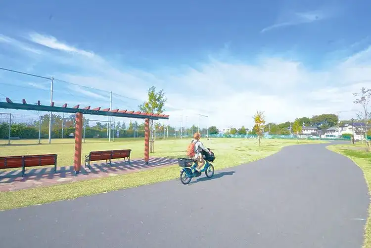

Higashikurume, Tokyo: things to do, food and stays
Higashikurume · Tokyo
Higashikurume
Highlighted on the Tokyo map.

Sights
Dining
Iruka Tokyo
入鹿TOKYO

Noodle restaurant in Higashikurume, Tokyo.
Ramen Otoko Mori Higashikurume Honten
ラーメン 男盛 東久留米本店

Noodle restaurant in Higashikurume, Tokyo.
Chuka Soba Marume Higashikurume ten
中華蕎麦 丸め 東久留米店

Noodle restaurant in Higashikurume, Tokyo.
La Boulangerie HIRATSUKA
ラ ブーランジェリー ヒラツカ

Sweets and bakery shop in Higashikurume, Tokyo.
Kuradashi Miso Menba Ippo Higashikurume ten
蔵出し味噌 麺場壱歩 東久留米店

Noodle restaurant in Higashikurume, Tokyo.
Seafood Ichiba Shokudo
海鮮市場食堂

Seafood restaurant in Higashikurume, Tokyo.
POT Higashikurume ten Reservation
POT 東久留米店

Chinese or Asian restaurant in Higashikurume, Tokyo.
Tantanmen Kai Reservation
たんたんめん Kai

Noodle restaurant in Higashikurume, Tokyo.
Kisetsu no Oryori Sansui Somoku
季節のお料理 山水草木

Noodle restaurant in Higashikurume, Tokyo.
Tsukemen Raamen Takeya
つけ麺・らあめん 竹屋

Noodle restaurant in Higashikurume, Tokyo.
Ramen Kigara
らぁ麺 亀我楽

Noodle restaurant in Higashikurume, Tokyo.
Unagi Kawamatsu
うなぎ 川松

Seafood restaurant in Higashikurume, Tokyo.
Ruchira
ルチラ

Chinese or Asian restaurant in Higashikurume, Tokyo.
Rin Tei
鈴亭

Izakaya or bar in Higashikurume, Tokyo.
Miki Shokudo
三喜食堂

Japanese restaurant in Higashikurume, Tokyo.
Kujaku En
孔雀苑

Chinese or Asian restaurant in Higashikurume, Tokyo.
SAVOY Supajapo ten
SAVOY スパジャポ店

European restaurant in Higashikurume, Tokyo.
Dairen
大連

Chinese or Asian restaurant in Higashikurume, Tokyo.
Spadium Japon Food Court
スパジアムジャポン フードコート

Restaurant in Higashikurume, Tokyo.
Asian Ryoriya Tsai
アジア料理屋 菜

Chinese or Asian restaurant in Higashikurume, Tokyo.
Morimori Sushi Ion mall higashikurume ten
もりもり寿し イオンモール東久留米店

Seafood restaurant in Higashikurume, Tokyo.
Bistro Coin Reservation
Bistro Coin

European restaurant in Higashikurume, Tokyo.
Shino
志乃

Japanese restaurant in Higashikurume, Tokyo.
Bakery House Mai Higashikurume ten
ベーカリーハウス マイ 東久留米店

Sweets and bakery shop in Higashikurume, Tokyo.
TOKYO COFFEE ROASTERY CAFE Reservation
TOKYO COFFEE ROASTERY CAFE

Cafe in Higashikurume, Tokyo.
Cafe 37℃
Cafe37℃

Cafe in Higashikurume, Tokyo.
Charcuterie Moe
シャルキュトゥリー・モエ

Restaurant in Higashikurume, Tokyo.
Boulangerie SAWANO
ブーランジェリー サワノ

Sweets and bakery shop in Higashikurume, Tokyo.
Ptisserie Cafe M.YASUHIKO
パティスリーカフェ エムヤスヒコ

Cafe in Higashikurume, Tokyo.
Shoryu Bo
祥龍房

Chinese or Asian restaurant in Higashikurume, Tokyo.
Ramen Hinata Ya
ラーメン ひなた屋

Noodle restaurant in Higashikurume, Tokyo.
Minna no Shokudo B Kitchen
みんなの食堂 ビーキッチン

Japanese restaurant in Higashikurume, Tokyo.
Kakushichi
かくしち

Cafe in Higashikurume, Tokyo.
East Side Cafe & Dining

Cafe in Higashikurume, Tokyo.
Atariya
当り屋

Noodle restaurant in Higashikurume, Tokyo.
IN THE FOREST CAFE
インザフォレストカフェ

Cafe in Higashikurume, Tokyo.